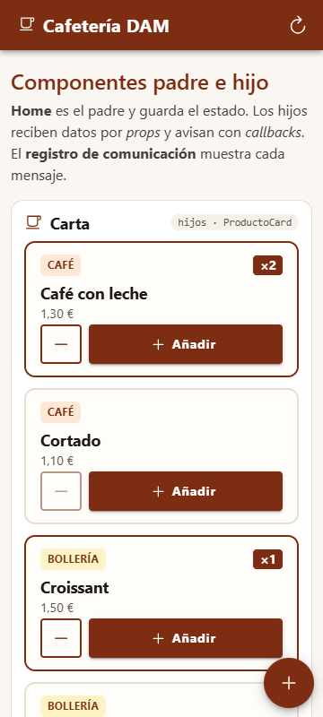
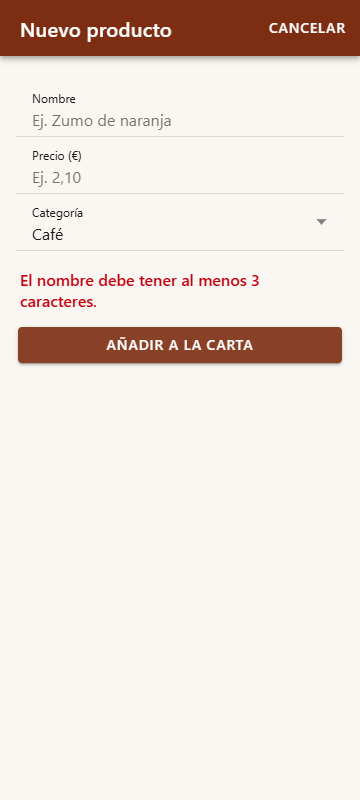
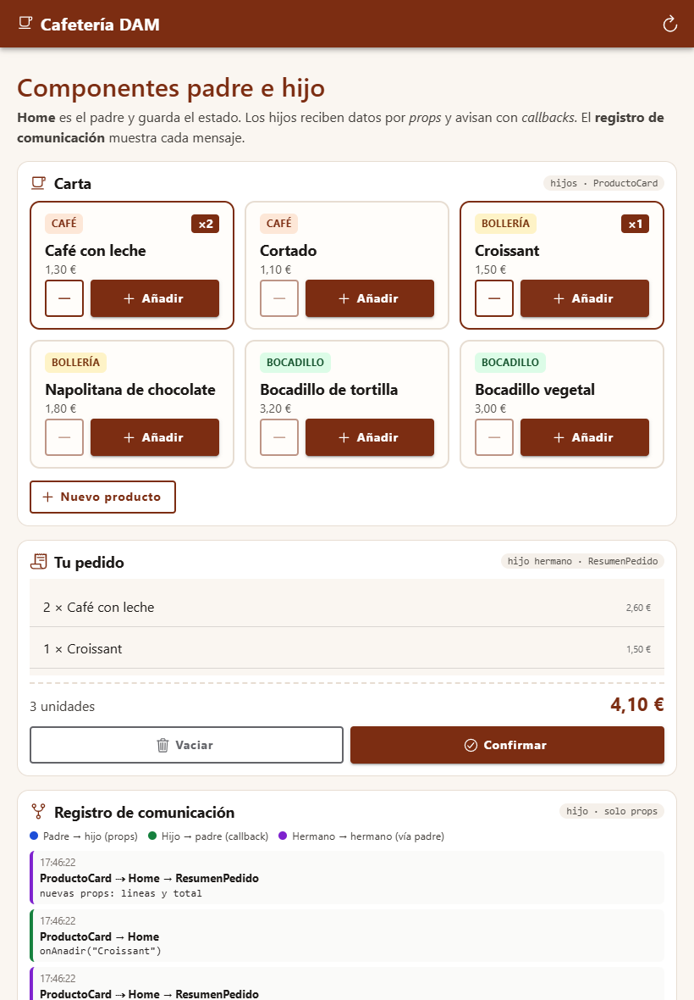
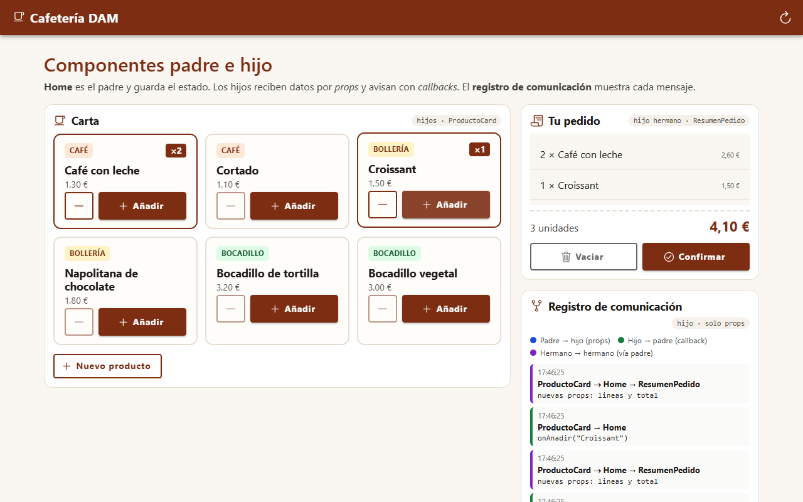

| Despliegue (Vercel) | https://ionic-react-padre-hijo.vercel.app |
| Repositorio | https://github.com/clax-dev/DI-ionic-react-padre-hijo |
| Stack | Ionic React 8 · React 18 · TypeScript estricto · Vite 5 |
Construir una app Ionic React en la que un componente padre se comunique con varios componentes hijos en ambos sentidos. El caso de uso es una cafetería: el cliente añade productos de la carta a su pedido, ve el total y puede añadir productos nuevos a la carta. Un panel de registro de comunicación muestra en pantalla cada mensaje que viaja entre componentes, para que el flujo de datos se vea al usar la app.
Home (PADRE · estado: productos, pedido, eventos, modalAbierto, toast) ├─ SeccionPanel props ↓ titulo, icono, etiqueta + children ├─ ProductoCard ×N props ↓ producto, cantidad callbacks ↑ onAnadir, onQuitar ├─ ResumenPedido props ↓ lineas, total callbacks ↑ onVaciar, onConfirmar ├─ FormularioProducto props ↓ abierto · estado local callbacks ↑ onCrear(datos), onCerrar └─ RegistroComunicacion props ↓ eventos callback ↑ onLimpiar types/pedido.ts → contrato tipado que comparten padre e hijos
| Patrón | Dirección | Cómo funciona en el código |
|---|---|---|
| Props | padre → hijo | <ProductoCard producto={p} cantidad={pedido[p.id] ?? 0} … />. El hijo pinta lo que recibe; la insignia «×2» la decide el padre. |
| Callbacks | hijo → padre | El padre pasa una función (onAnadir={handleAnadir}) y el hijo la invoca: onClick={() => onAnadir(producto)}. El hijo no modifica datos, solo avisa de lo que ha pasado. |
| Estado elevado | hermano → hermano | ProductoCard y ResumenPedido no se conocen. La tarjeta avisa a Home, que actualiza pedido; React vuelve a pintar ResumenPedido con lineas y total nuevos. |
children | padre → hijo | SeccionPanel pone el marco (título, icono) y el padre decide qué va dentro. Es composición: el contenedor no conoce su contenido. |
| Estado local + resultado | hijo → padre | FormularioProducto guarda y valida sus campos. Solo cuando son correctos llama a onCrear({nombre, precio, categoria}); el padre genera el id y lo añade a la carta. |
ProductoCard llama a onAnadir(croissant) ↑ → Home hace setPedido({…prev, p3: 1}) → React vuelve a pintar → la tarjeta recibe cantidad=1 ↓ y el resumen recibe lineas y total nuevos ↔. El registro de la app muestra estos pasos con los mismos colores.| Decisión | Motivo | Alternativa descartada |
|---|---|---|
Un solo dueño del estado (Home) | Hay una única fuente de verdad: la insignia y el total no pueden desincronizarse. | Que cada tarjeta guarde su cantidad: el resumen tendría que preguntarle a cada una. |
Pedido como diccionario id → cantidad | No duplica los productos; lineas y total se derivan con useMemo. | Guardar un array de líneas con copias de los productos. |
useCallback en los callbacks | El hijo recibe la misma función entre renders, así que se puede optimizar con React.memo. | Funciones nuevas en cada render (funciona, pero obliga a repintar todos los hijos). |
| Formulario con estado propio | Cada tecla no vuelve a pintar el padre, que solo recibe datos validados. | Tener los useState del formulario en Home. |
| Props y callbacks, sin estado global | Con un nivel de profundidad, el flujo queda explícito y cada dato tiene un camino rastreable. | Context API o Redux: compensan cuando los datos bajan varios niveles (prop drilling). |
aria-label en los botones con icono, total y registro con aria-live="polite" y error del formulario con role="alert".


